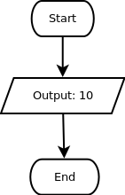

Selain tipe data string, dalam berbagai bahasa pemrograman juga dikenal tipe data angka. Angka-angka bilangan bulat biasanya disimpan dalam tipe data integer, sedangkan angka-angka pecahan biasa disimpan dalam tipe data float atau double.
Perhatikan bahwa angka 0 di depan, biasanya tidak bermakna dalam suatu angka. Semisal 010 sama saja artinya dengan 10. Nah, nomor HP kamu biasanya diawali dengan angka 0, misalnya 081234567. Untuk data-data seperti ini, biaanya programmer akan menggunakan tipe data string, bukan integer ataupun float.
Tidak ada patokan resmi mengenai apakah sebuah angka harus disimpan sebagai string, integer, atau float. Namun biasanya, jika sebuah angka akan digunakan dalam perhitungan atau berawalan dengan 0, maka angka tersebut akan disimpan dalam bentuk string. Selain itu, jika angka adalah bilangan bulat, dan tidak mungkin pecahan (misal jumlah anak), maka akan disimpan dalam bentuk integer.
